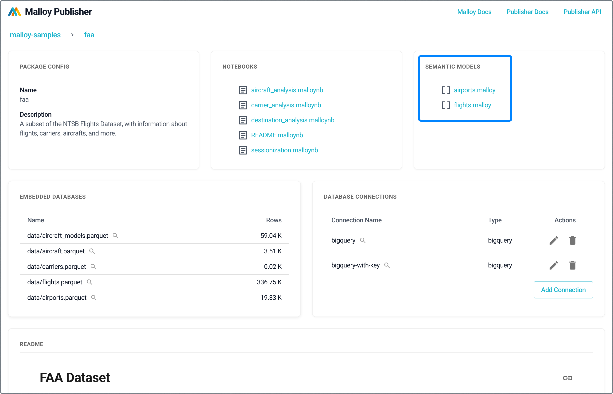
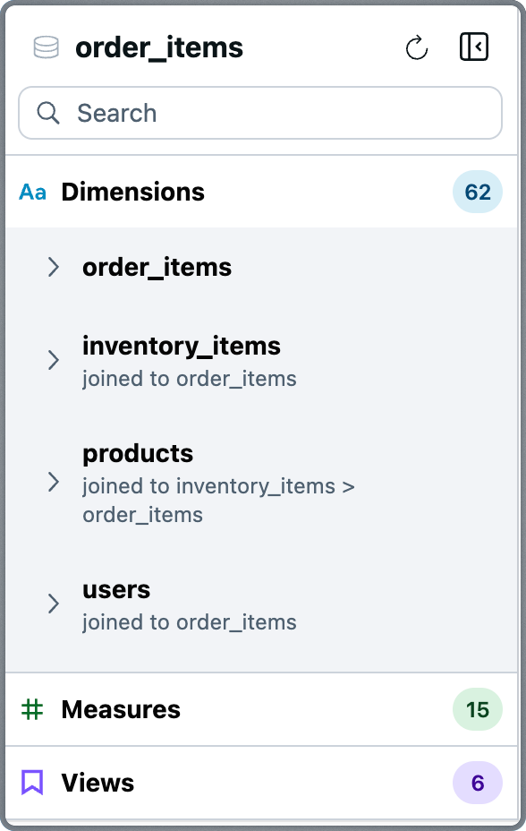
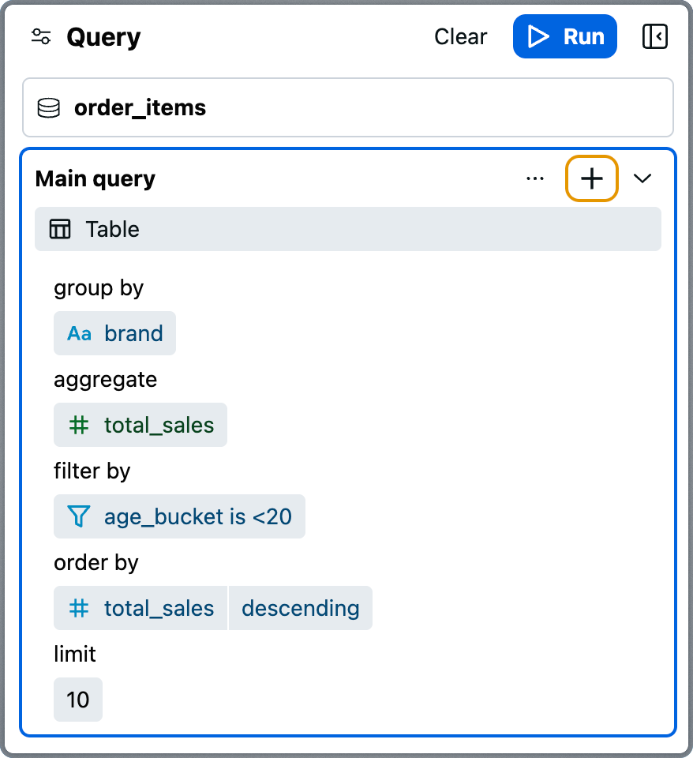
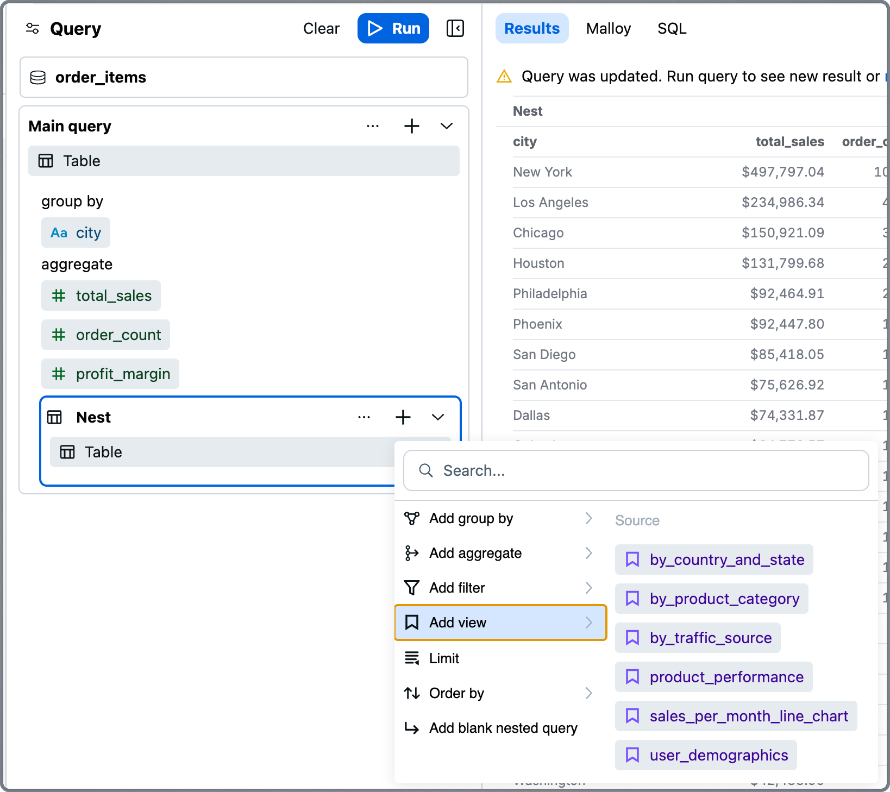
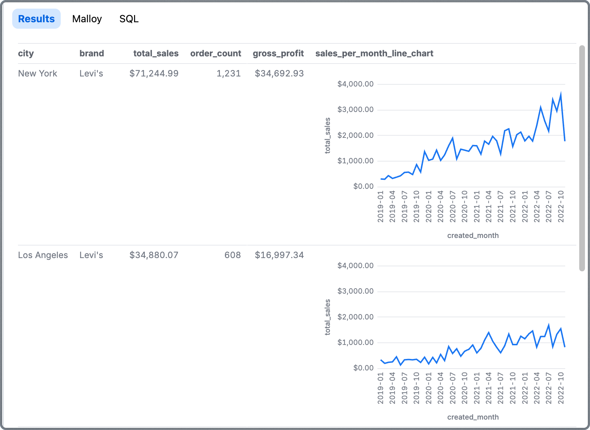
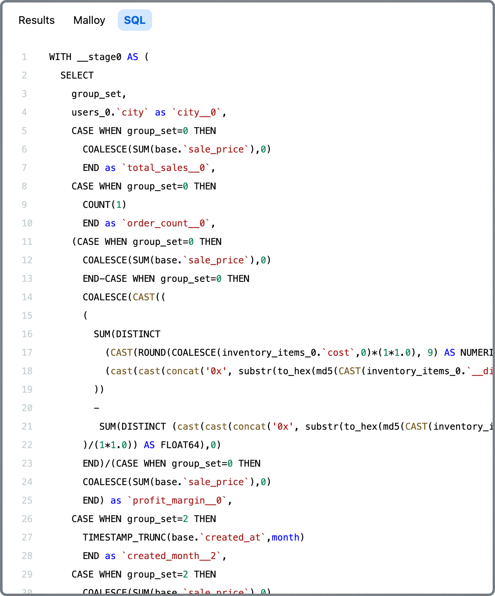

Analyzing with Notebooks
Analyzing with Notebooks

Explorer is a no-code, visual query builder for Malloy. Use it yourself in VS Code during development, or serve it to your entire team via Publisher.
Accessing Explorer
In VS Code
Click Explore above a source: definition to open Explorer directly in VS Code.
Via Publisher
Deploy Publisher (see Publishing) and share the URL with your team. Click on a published Malloy model to explore it.
The URL format is: http://localhost:4000/project/package/model
Anyone with access to Publisher can explore your semantic models—no Malloy knowledge required.
Key Benefits
Semantic-first foundation – Every query runs against a Malloy model, which captures the business meaning and relationships of the data.
No-code UX – Construct queries visually using dimensions, measures, filters, and charts.
Live, nested analysis – Drill down into rich multi-level breakdowns using Malloy's native nesting capabilities.
Full transparency – View the Malloy and SQL generated by your visual query.
AI and developer ready – All queries are valid Malloy code, making them composable, reusable, and LLM-consumable.
Guaranteed correct metrics – Malloy supports symmetric aggregates, ensuring that metrics compute correctly even across joins with varying cardinality.
Interface Overview
Explorer is organized into three main panels:
Source Panel – Browse available dimensions, measures, and views from the semantic model.
Query Panel – Assemble and refine your query using a visual editor.
Results Panel – View results as tables or charts, and inspect the underlying Malloy and SQL.

Source Panel
The Source Panel presents the structure of your Malloy model—typically organized around a central fact table—and surfaces all the fields and reusable logic available for analysis.
The panel is organized into three sections:
Dimensions
Attributes you can group by, filter on, or sort with. Dimensions are grouped by their source. For example, in a query centered around order_items, you might also see dimensions from joined models like users or products.
Hovering over a dimension reveals actions:
Add as Group By – Segment results by this dimension
Add as Filter – Apply a filter based on the field
Add as Sort – Sort results by this value

Measures
Predefined metrics you can aggregate, filter on, or sort with. These include calculations such as totals, averages, counts, and ratios.
Hovering over a measure provides actions:
Add as Aggregate – Include the metric in results
Add as Filter – Use the measure to restrict results
Add as Sort – Sort results based on the metric value

Views
Saved queries defined in the underlying Malloy model. Views often represent curated KPIs, commonly-used explorations, or analytical building blocks.
Hovering over a view provides actions:
Add to Query – Load the view's query
Add as Nested Query – Add the view as a nested subquery
Query Panel
The Query Panel is where queries come together. It provides a structured, visual representation of your query.
Top Components
Run Button – Execute the query and display results
Clear Button – Remove the current query configuration
Source – Shows which source the query runs against
Chart Type Selector – Select visualization type
Query Display – Shows your current query structure
Add Query Element (+)
This menu lets you add fields by operation type:
Add Group By
Add Aggregate
Add Filter
Add View
Limit
Order By
Add Blank Nested Query
Display Format Selector
Choose how to visualize results:
Table
Bar Chart
Line Chart
Dashboard
JSON
List / List Detail
Point Map
Scatter Chart
Segment Map

Query Configuration
Your current query displays in clearly labeled sections:
Group By – Dimensions to segment by
Aggregate – Measures to calculate
Filter By – Conditions to apply
Order By – Sort order
Limit – Row limit
Hovering over a section shows additional ways to add elements.

Nested Queries
Malloy's nesting feature enables rich, multidimensional analysis—and Explorer gives you a no-code way to use it.
To add a nested query:
Select Nest Query from the Query Panel More Actions menu
Or hover over a view in the Source Panel and select Add as Nested Query

Each nested block can have its own groupings, aggregates, filters, ordering, and even additional nests.
Use nesting to:
Break down results by subgroups
Create expandable subtables or charts
Explore deep, layered data relationships
Malloy compiles nested blocks into safe, aggregating subqueries in SQL. Filters can be scoped to any level.
Results Panel
The Results Panel displays query output whenever you click Run. Results render according to your selected chart type and include support for nested results.
Nested queries produce expandable sub-tables or inline charts that show multidimensional breakdowns per row.
Code Transparency
Alongside visual output, the Results Panel includes:
Malloy Tab – Shows the Malloy query generated by your visual configuration.

SQL Tab – Displays the fully compiled SQL sent to the database.
This transparency gives developers, analysts, and AI systems full access to inspect, reproduce, or extend any query.
When to Use Explorer
Use Explorer when:
Interactive exploration
Ad-hoc business questions
Visualizing results
Sharing findings via URL
No coding required
Use other tools when:
Automating reports → Use REST API
Building React apps → Use Publisher SDK
AI integration → Use MCP
Next Steps
Explorer is a Publisher SDK component. If you want to embed it in your own data application, see the SDK documentation.
REST API – Build custom applications
Publisher SDK – Embed Explorer in React apps
Nested Views Reference – Learn more about nesting